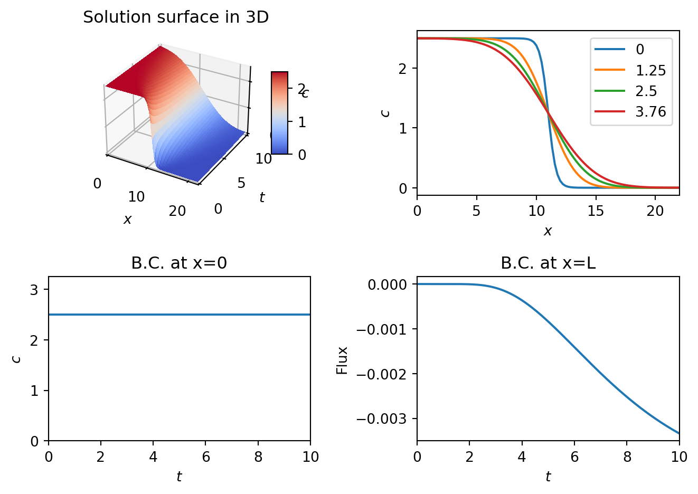

x=2
y=2
z=x+y
print(z)4Python has been installed on most computers on campus and you can access it via AppsAnywhere. The icon is located on your desktop. From AppsAnywhere, please select Anaconda 3.
However, you can also use your own personal computer. If you decide to do so, you will need to install Python on it. Python is free and works on Windows, Mac OS X and Linux.
It is strongly recommended that you download and install Anaconda. Install might take 5-15 minutes. Then reboot your computer.
Once you have installed Anaconda you can open Spyder. This will provide you with an editor to run python codes.
Install a development environment (for writing and unnirn gscripts). I use Visual studio Code.
Install the VS Code Python extension
Copy and paste the code below and save as DemoPythonCode.py.
x=2
y=2
z=x+y
print(z)4You should see the answer 4 printed out on the terminal.
You will likely now need to install some libraries
Let \(c=c(x,t)\).
Suppose that we want to solve the PDE
\[ \frac{\partial c}{\partial t}=D\frac{\partial ^ 2 c}{\partial x ^2} \]
on the domain \(x\in[0,L]\) with \(t\in[0,T]\).
The initial condition is \[ c(0,x)=\frac{c_0}{1+e^{\gamma (x-L/2)}} \] where \(D, c_0, \gamma \in \Re^+\).
At \(x=0\) we fix the density to be \[ c(0,t)=c_0. \] At \(x=L\) we impose a no-flux condition, i.e. \[ J_{x=0}=-D\frac{\partial c}{\partial x}\bigg|_{x=L}=0 \implies \frac{\partial c}{\partial x}\bigg|_{x=L}=0. \]
We will use the finite difference method.
Discretise the independent variables
Let \(x_i=i\Delta x\) where \(i=0,..,N_x\). Choose \[ N_x \Delta x=L \implies \Delta x = \frac{L}{N_x}. \]
Similarly, discretise time such that
\(t_j=j\Delta t\) where \(j=0,..,N_t\). Choose \[ N_t \Delta t=T \implies \Delta t = \frac{T}{N_t}. \]
Discretise the dependent variable
Let \(c_{j,i}\) represent the solution at the \(i^{th}\) spatial position and \(j^{th}\) time point.
Approximate derivatives in the PDE using finite differences
Using an explicit method, the first order time derivative is approximated by
\[ \frac{\partial c}{\partial t}= \frac{c_{j+1,i}-c_{j,i}}{\Delta t}. \]
The second order spatial derivative is approximated by
\[ \frac{\partial^2 c}{\partial x^2}= \frac{c_{j,i-1}-2c_{j,i}+c_{j,i+1}}{\Delta x ^2}. \]
Interior points in the spatial domain
For \(0<i<N_x\) the PDE can be expressed as
\[ \frac{c_{j+1,i}-c_{j,i}}{\Delta t} = D\frac{\partial^2 c}{\partial x^2}= \frac{c_{j,i-1}-2c_{j,i}+c_{j,i+1}}{\Delta x ^2} \]
Note that terms involving time \(j+1\) only appear in one position. To obtain an iterative scheme rearrange such that \[ c_{j+1,i}=c_{j,i} + \nu \left(c_{j,i-1}-2c_{j,i}+c_{j,i+1}\right) \]
where
\[ \nu=\frac{D \Delta t}{\Delta x ^2}. \]
Boundary conditions
At \(x=0\) the boundary condition is that \(c=c_0 \forall t\). In the discretised system this is represented by \[ c_{j,0}=c_0 \forall j. \]
At \(x=L\) we need to impose the no-flux condition. Consider the second derivative \[ \frac{\partial^2 c}{\partial x^2} = \lim_{\Delta x \rightarrow 0} \frac{\frac{\partial c}{\partial x}\bigg|_{x\rightarrow L ^+}-\frac{\partial c}{\partial x}\bigg|_{x\rightarrow L ^-}}{\Delta x}. \]
Now impose the boundary condition at \(x=L\), i.e. \[ \frac{\partial c}{\partial x}_{x\rightarrow L^+}=0. \]
Hence the Laplacian term can be represented by
\[ \frac{\partial^2 c}{\partial x^2} = \lim_{\Delta x \rightarrow 0} \frac{-\frac{\partial c}{\partial x}\bigg|_{x=L^-}}{\Delta x}= \frac{c_{j,i-1}-c_{j,i}}{\Delta x ^2}. \]
# Boundary condition
So the update rule is \[ c_{j+1,i}=c_{j,i}+\nu (c_{j,i-1}-c_{j,i}), \quad i=N_x. \]
In Figure 8.1 an implementation of the above method is coded in Python.
# Include python modules
import numpy as np
import matplotlib.pyplot as plt
from mpl_toolkits.mplot3d import Axes3D
from matplotlib import cm
# Domain
T=10.0
L=12.0
# Model parameters
D=1.2
c_0=2.5
gamma=3.0
# Discretise independent variables
# x
N_x=30
Delta_x=L/N_x
x=np.linspace(0,L,N_x)
# t
N_t=600
Delta_t=T/N_t
t=np.linspace(0,T,N_t)
# Define solution matrix
c=np.zeros((N_t,N_x),dtype=float)
# Impose initial condition
# t=0 is the first row of the solution matrix
c[0,:]=c_0/(1+np.exp(gamma*(x-L/2.0)))
nu=D*Delta_t/(Delta_x**2)
# Stability shows this condition must hold for numerical stability
assert(nu<0.5)
# Loop over time
for j in range(0,N_t-1):
# interior nodes
for i in range(1,N_x-1):
c[j+1,i]= c[j,i]+nu*(c[j,i-1]-2*c[j,i]+c[j,i+1])
# at x=0
i=0
c[j+1,i]=c_0
# at x=L
i=N_x-1
c[j+1,i]= c[j,i]+nu*(c[j,i-1]-c[j,i])
## Visualise solution
# set up a figure twice as wide as it is tall
fig = plt.figure()
# =============
# First subplot
# =============
# set up the Axes for the first plot
ax = fig.add_subplot(2, 2, 1, projection='3d')
[x_mesh,t_mesh]=np.meshgrid(x,t)
surf = ax.plot_surface(x_mesh, t_mesh,c,linewidth=0,cmap=cm.coolwarm, antialiased=False)
#ax[0,0].imshow(c,extent=[0,L,0,T],origin='lower')
ax.set_xlim([0,L])
ax.set_ylim([0,T])
ax.set_xlabel('$x$')
ax.set_ylabel('$t$')
ax.set_zlabel('$c$')
ax.set_title('Solution surface in 3D')
fig.colorbar(surf, shrink=0.5, aspect=5)
ax = fig.add_subplot(2, 2, 2)
ax.plot(x,c[0,:])
ax.plot(x,c[int(N_t/8),:])
ax.plot(x,c[int(2*N_t/8),:])
ax.plot(x,c[int(3*N_t/8),:])
ax.set_xlim([0,L])
ax.set_xlabel('$x$')
ax.legend([ str(0),str(round(t[int(N_t/8)],2)),str(round(t[int(2*N_t/8)],2)),str(round(t[int(3*N_t/8)],2)) ])
ax.set_ylabel('$c$')
ax = fig.add_subplot(2, 2, 3)
ax.plot(t,c[:,0])
ax.set_xlim([0,T])
ax.set_ylim([0,c_0*1.3])
ax.set_xlabel('$t$')
ax.set_ylabel('$c$')
ax.set_title('B.C. at x=0')
flux_x_L=(c[:,-1]-c[:,-2])/Delta_x
ax = fig.add_subplot(2, 2, 4)
ax.plot(t,flux_x_L)
ax.set_xlim([0,T])
ax.set_xlabel('$t$')
ax.set_title('B.C. at x=L')
ax.set_ylabel('Flux')
#plt.axis("equal") # Ensures square axes
fig.tight_layout()
plt.show()Exercises:
Here we consider using an implicit method. The key idea is that the time derviative is approximated using a backwards derivative.
For \(0<i<N_x\) the PDE can be expressed as
\[ \frac{c_{j+1,i}-c_{j,i}}{\Delta t} = D\frac{\partial^2 c}{\partial x^2}= \frac{\partial^2 c}{\partial x^2}= \frac{c_{j+1,i-1}-2c_{j+1,i}+c_{j+1,i+1}}{\Delta x ^2} \]
To update at time \(j+1\) we must now simultaneously solve for all discretised spatial points.
Let the vector \(\mathbf{c}_j\) represent the solution vector a the \(j^{th}\) time point. The iterative scheme can be written as
\[ A\mathbf{c}_{j+1}=\mathbf{c}_j \] where \(A\) is a tridiagonal matrix given by \[ A= \begin{pmatrix} 1 & 0 & 0 &0 & 0 ... & 0 \\ 0 &-\nu & 1+2\nu &-\nu & 0 & . . . & 0 \\ 0 & 0 &-\nu & 1+2\nu &\nu & . . . & 0 \\ &.& .& .& .& . &. & .\\ 0 & 0& 0 & 0 & 0 &-\nu & 1+2\nu & -\nu \\ 0& 0 & 0& 0 & 0 & 0 &-\nu & 1+\nu \\ \end{pmatrix} \]
The boundary conditions are represented by the first and last rows in the matrix \(A\).
After computing A and calculating its inverse the solution can be computed using a matrix multiplication
\[ \mathbf{c}_{j+1}=A^{-1}\mathbf{c}_j \]
When solving nonlinear reaction diffusion equations, it is common to use a semi implicit method. The Laplacian is approximated implicitly whilst the nonlinear reactions are treated explicitly.
# Include python modules
import numpy as np
import matplotlib.pyplot as plt
from mpl_toolkits.mplot3d import Axes3D
# Domain dimensions
T=10.0
L=22.0
# Model parameters
D=1.2
c_0=2.5
gamma=3.0
# Discretise independent variables
# x
N_x=100
Delta_x=L/N_x
x=np.linspace(0,L,N_x)
# t
N_t=600
Delta_t=T/N_t
t=np.linspace(0,T,N_t)
# Define solution matrix
c=np.zeros((N_t,N_x),dtype=float)
# Impose initial condition
# t=0 is the first row of the solution matrix
c[0,:]=c_0/(1+np.exp(gamma*(x-L/2.0)))
# Loop over time
nu=D*Delta_t/(Delta_x**2)
# Define the matrix A
A = np.zeros((N_x, N_x))
for i in range(N_x):
A[i, i] = 1 + 2*nu
if i > 0:
A[i, i-1] = -nu
if i < N_x-1:
A[i, i+1] = -nu
A[0,0]=1
A[0,1]=0
A[-1,-1]=1+nu
A[-1,-2]=-nu
# Compute the inverse of A
A_inv=np.linalg.inv(A)
for j in range(0,N_t-1):
new_sol=A_inv@(c[j,:].T).T
# interior nodes
c[j+1,:]=new_sol#+0.01*c[i,:]*(1-c[i,:]/c_0)
c[j+1,0]=c_0 # enforce the dirichlet bc
## Visualise solution
# set up a figure twice as wide as it is tall
fig = plt.figure()
# =============
# First subplot
# =============
# set up the Axes for the first plot
ax = fig.add_subplot(2, 2, 1, projection='3d')
[x_mesh,t_mesh]=np.meshgrid(x,t)
surf = ax.plot_surface(x_mesh, t_mesh,c,linewidth=0,cmap=cm.coolwarm, antialiased=False)
#ax[0,0].imshow(c,extent=[0,L,0,T],origin='lower')
ax.set_xlim([0,L])
ax.set_ylim([0,T])
ax.set_xlabel('$x$')
ax.set_ylabel('$t$')
ax.set_zlabel('$c$')
ax.set_title('Solution surface in 3D')
fig.colorbar(surf, shrink=0.5, aspect=5)
ax = fig.add_subplot(2, 2, 2)
ax.plot(x,c[0,:])
ax.plot(x,c[int(N_t/8),:])
ax.plot(x,c[int(2*N_t/8),:])
ax.plot(x,c[int(3*N_t/8),:])
ax.set_xlim([0,L])
ax.set_xlabel('$x$')
ax.set_title('')
ax.legend([ str(0),str(round(t[int(N_t/8)],2)),str(round(t[int(2*N_t/8)],2)),str(round(t[int(3*N_t/8)],2)) ])
ax.set_ylabel('$c$')
ax = fig.add_subplot(2, 2, 3)
ax.plot(t,c[:,0])
ax.set_xlim([0,T])
ax.set_ylim([0,c_0*1.3])
ax.set_xlabel('$t$')
ax.set_ylabel('$c$')
ax.set_title('B.C. at x=0')
flux_x_L=(c[:,-1]-c[:,-2])/Delta_x
ax = fig.add_subplot(2, 2, 4)
ax.plot(t,flux_x_L)
ax.set_xlim([0,T])
ax.set_xlabel('$t$')
ax.set_title('B.C. at x=L')
ax.set_ylabel('Flux')
#plt.axis("equal") # Ensures square axes
fig.tight_layout()
plt.show()